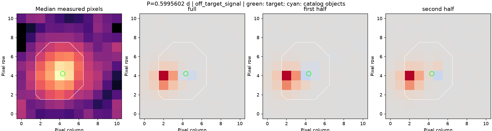
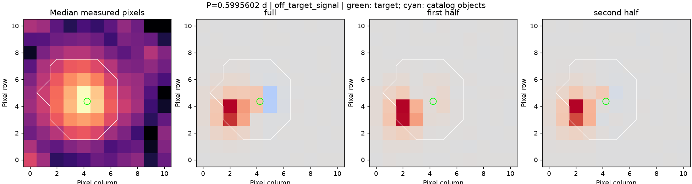

组别：目录食双星；分析状态：分析完成。
选定光度周期：0.5995601511561314 天；目录轨道周期：0.5996011419373573 天；比较：与目录周期一致。
来源处理：程序建议排除该信号。目录组也需要独立来源核验。
每排图对应一个观测时段。第一幅显示典型亮度，后三幅显示所选周期信号在全段、前半段和后半段的位置。绿圈是目标，青色叉号是初始目录对象；红色表示与参考光变同向的成分，蓝色表示反向成分。各图色阶不同，不能直接按颜色深浅比较时段间的绝对强弱。前后半段属于同一次观测。


S12 和 S66 的周期信号都集中在目标旁边约 2.3 像素处。VSX 中约 45.8 角秒外的 Gaia DR3 5768542542009863296 记录为 E 型变星，周期 0.59951 天，与程序选出的约 0.59956 天相符；该邻星坐标投影距两个时段的信号峰分别约 0.41、0.61 像素。这是所选信号来自邻星的强证据，不说明目标在其他周期上恒定。
备注范围和证据校验值。这些补查没有修改原预测，也不是完整的独立标准答案。
目录邻星信息只覆盖 TESS-EBs v1.0。位置相符不排除未分辨近邻；目录周期的半/双倍关系需人工辨别。尚未完成独立裁定，也未查首次发现资格。